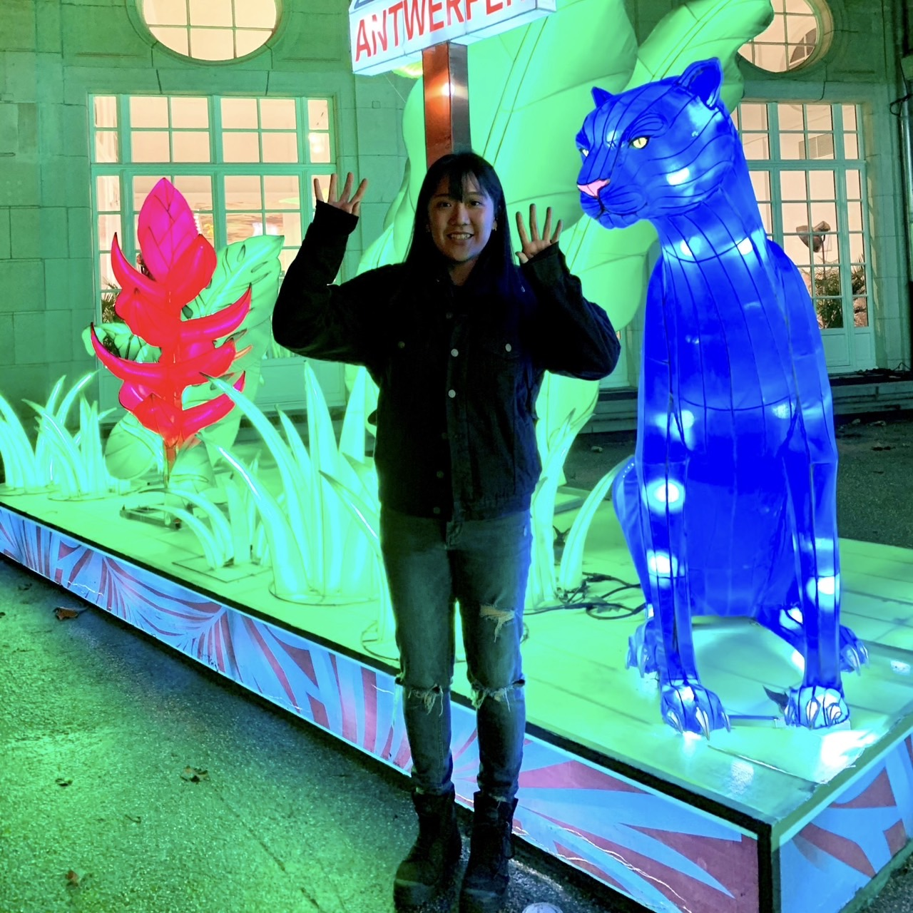

1.個人簡介和申請動機
您好，我在去年於工研院學習了前端、後端及資料庫的基本概念，課程為期兩個月半。讓我初步認識資訊產業，也接觸到區塊鏈。 後續在六角學院學習前端，包括 HTML、CSS、JavaScript 和 React，並嘗試製作出網路商城。
然而，在這個過程中，大多是複製貼上地完成作品，讓我產生了疑慮：我是否真的適合成為工程師


2.曾經做過哪些軟體工程技術相關的學習？若有作品請分享給我們。
六角的線上課程，做出一個購物商城，具前後台架構。
3.如果參與這個訓練，會怎麼安排學習時間？
目前為國小的電腦代課老師，有空閒時間可運用，也會利用下班時間學習
4.軟體技術日新月異，如何確定選擇投入的領域是正確有回報的？
曾經看過一句話不要排斥任何學習和成長的機會，也不要拒絕程式語言與科技業的基本知識。就像英文一樣一定要具備能力；不需要精通，但要有基本概念。抱持這樣的理念，善用時間繼續學習。
5.請描述一件產生明顯負面情緒的經歷，如何處理該情緒？
27歲時，我決定轉職進入區塊鏈前端開發。然而，要自學新技術再加上沒有穩定的收入來源，面臨了找不到工作的經濟壓力。
✔尋求額外收入來源：除了利用空閒時間學習，我透過Youtube學習編織，創立了一個小型文創品牌「拾字韌袋」，靠著販賣編織商品來增加收入。也讓自己在轉職過程中找到自我價值感。
✔設定短期可行目標：每天學習線上課程、逐步提升自己的技能，並告訴自己每一個學習都是日後的養分。
6.關於這份申請網頁，分享一個開發時的技術心得。
一開始我使用 Figma 設計草圖，主要目的是規劃整體的視覺架構。採用了 Bento Grid 的設計風格，將版面切割成大小不一的格子，透過大小不一、顏色區隔。
在響應式布局下，手機版則簡化為單列排列，確保內容的易讀性。
通過 CSS3 的 transition 屬性來加入了一些簡單的動畫效果，例如將滑鼠懸停在格子上時，會有縮放效果，提升了頁面的互動性。
7.如何看待自身工作和整個社會群體的連結關係？
隨著網絡詐騙、洗錢等問題愈發猖獗，儘管區塊鏈技術具有一定的隱蔽性，但其公開透明的交易紀錄為追蹤和分析金融交易提供了助力，並協助打擊犯罪。
希望能像陳梅慧那樣在生前利用自身區塊鏈技術和虛擬貨幣領域的專業知識，協助刑事局調查「創意私房」案等，為社會提供重要的貢獻。 也希望政府能夠檢討並加強對這類領域專家的保護，他們在打擊網絡犯罪和洗錢行為的過程中，往往面臨著來自不法分子的威脅。
作為一名初階前端學習者，目前在學習設計簡潔且易於使用的介面，雖然能力還不足也未碰觸到資安這一塊，但期待自己能夠持續進步。
8.其他想要對我們說的事情？
今年十月開始投遞履歷後，我發現自己幾乎沒有獲得前端工程師的面試機會，反而在 UI/UX 設計和網頁設計收到了一些面試邀約。
這讓我意識到，是自己的作品集內容過於簡單且常見，因此無法在前端工程師職位中脫穎而出。
為了克服這個問題，持續增進自己的技術能力是必要的，期望能加入到WeHelp Bootcamp做出更多個人特色與技術深度的作品集。